语音提醒器
用户手册
一、 简介
语音提醒器软件是一个用于提醒用户完成日常事项的系统，用户使用该系统能够进行日常事项的顺序提醒，以避免遗漏事项。语音提醒器软件是一个操作简单的系统，用户点击打开系统即可操作，界面简单直观、操作方便，是一个实用性强的系统。
二、 目的
熟悉并学习使用语音提醒器软件；
了解并熟悉语音提醒器软件的设置及相应操作面板中按钮的布局、功能、意义和使用方法；
了解并学习在语音提醒器软件中进行的操作过程、步骤、注意事项，以及保存；
三、 具体操作
语音提醒器软件的页面如下图所示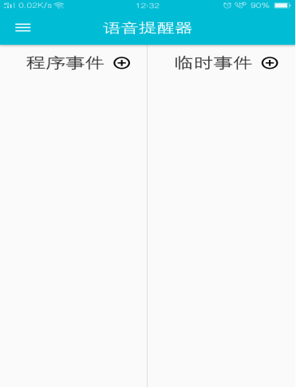
程序事件是指一个独立事件所包含的所有事件组合。
在首页页面中找到程序事件，点击符号即可进入到程序事件设置功能界面中，在界面中可以看到设置选项如图所示：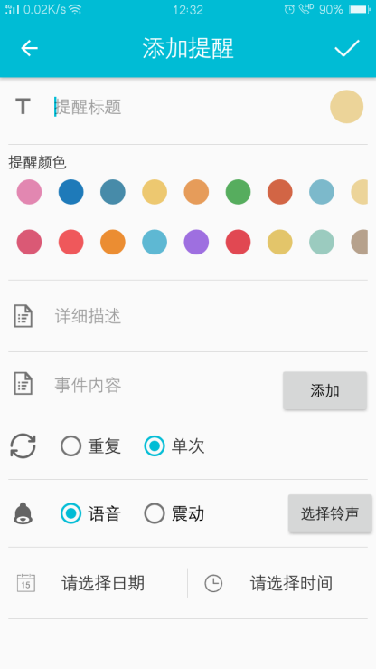
在界面中可以看到多个选择项，点击即可进入到程序事件标题的文字编辑界面中，用输入法进行文字编辑，为节省空间只输入事件的简洁描述即可。也可用手机自带的语音输入功能实现语音输入，以节省输入文字时间。
提醒颜色：点击用户可对同类事件提醒选择同一颜色，以方便查看、查找。选择后将在首页事件栏呈现所选颜色。
详细描述：点击用户可对事件进行详细记录。
设置步骤：
1、点击“提醒标题”输入事件的总名称
2、点击“添加”按钮添加程序事件，如图：
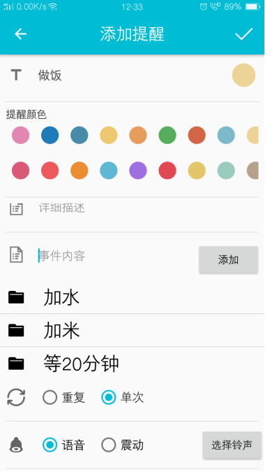
3、点击选择铃声，可以选择不同的预备铃音。
4、点击选择日期与时间弹出如下页面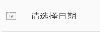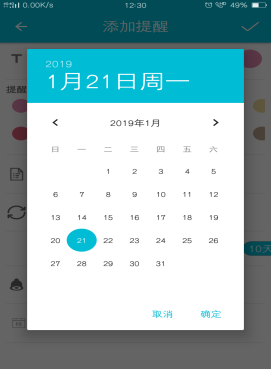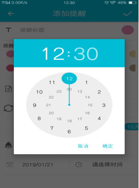
5、点击页面右上角“✔”号，创建程序事件完成。
6、如需对已经生成的事件进行编辑或删除，左滑事件栏，出现“编辑与删除”按钮，进行事件编辑或删除。
3.1临时事件
临时事件是指不带有时间周期重复提醒的单次提醒事件。
在首页界面中找到功能按钮，点击
设置方法与“程序事件”设置方法相同。
注意事项：
“临时事件”提醒播报完成后首页“临时事件”栏内的事件将自动归入左边栏“临时事件历史记录”中，在“临时事件历史记录”中可找到，如图所示：
点击临时事件提醒记录可见已经提醒过的临时事件历史记录：
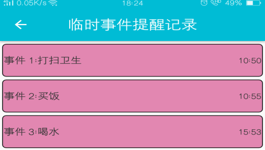
临时事件如需编辑或删除，左滑事件或长按事件出现“编辑与删除”按钮，用户可根据需要选择。
固定事件是指带有固定时间周期的重复提醒事件。
在左边栏中找到“固定事件”，点击即可进入到固定事件设置功能界面中，在界面中可以看到设置选项如图所示：
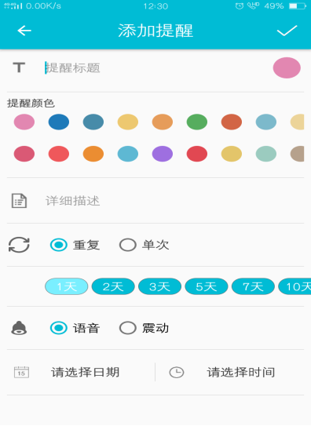
固定事件与程序事件、临时事件设置步骤大体相同，所不同的是选择日期时间完成后，选择“重复”选项下的天数以完成提醒周期设置，如图：
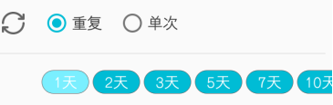
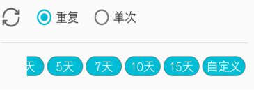
注意：由于安卓系统的原因“固定事件”可能播报提醒不成功，用户需特别注意。
3.3.左边栏
点击首页左上角按钮进入左边栏
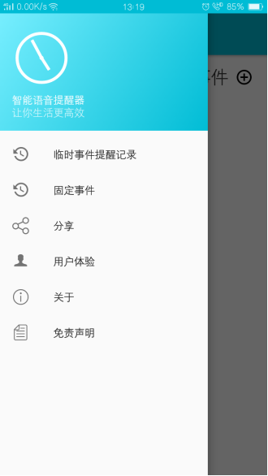
软件使用注意事项：由于安卓系统的原因，语音提醒器可能存在被强制停止的情况，用户使用时应加入手机应用白名单，尽量避免软件被强制清理。